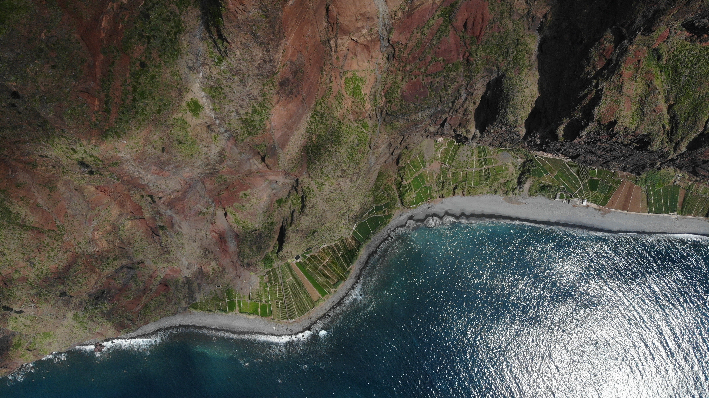
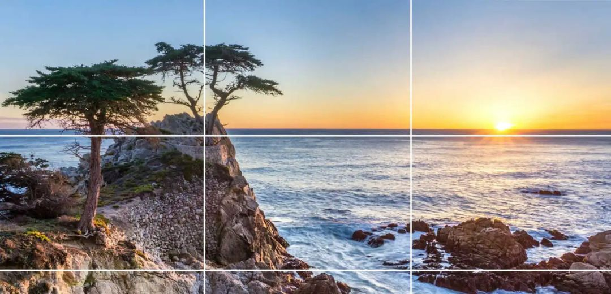
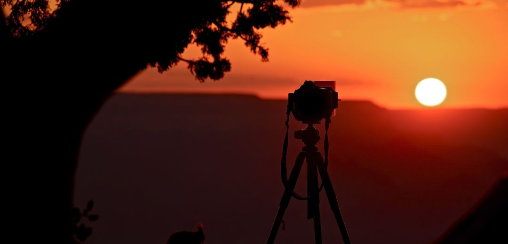
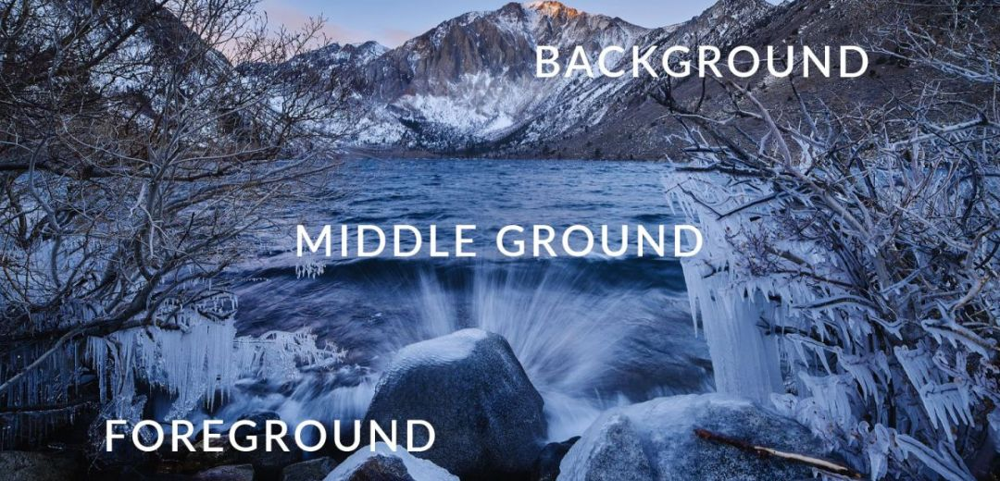
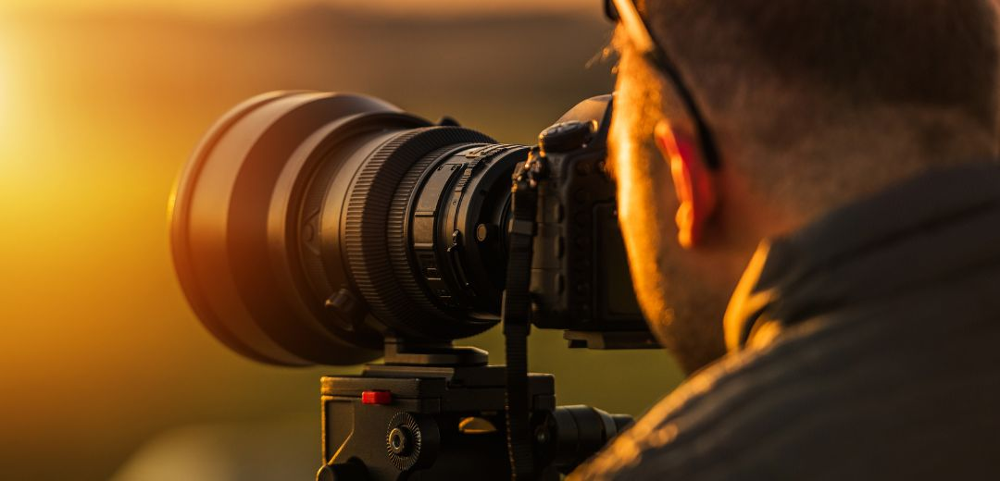
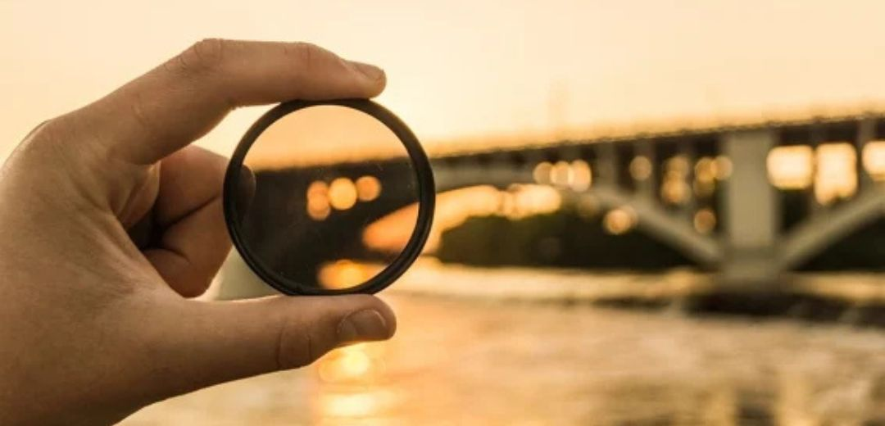
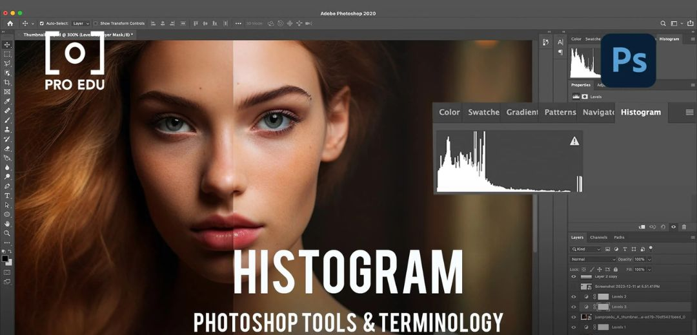
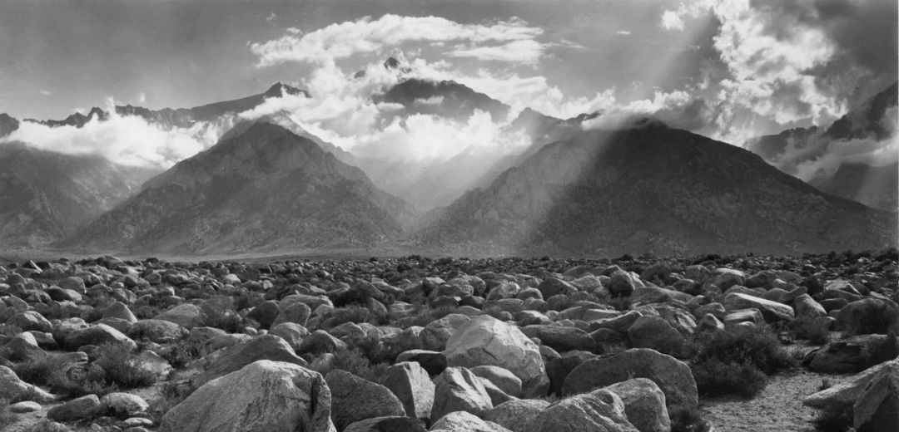

La photographie de paysage est une discipline qui demande patience, observation et préparation. Voici les techniques essentielles pour capturer la beauté brute de la nature.
1. Choisir le bon moment
La lumière dorée du lever et du coucher du soleil offre les meilleures conditions pour la photographie de paysage. Levez-vous tôt et planifiez vos sorties en fonction des conditions météorologiques.

2. Maîtriser la composition
La règle des tiers, les lignes directrices et les premiers plans sont vos meilleurs alliés. Cherchez des éléments qui guident le regard à travers l'image et créent de la profondeur.

3. Utiliser un trépied
Un trépied stable est indispensable pour les longues expositions et les conditions de faible luminosité. Il garantit la netteté de vos images et permet d'expérimenter avec la profondeur de champ.

4. Penser au premier plan
Un premier plan intéressant ajoute de la profondeur et donne une échelle à votre image. Rocher, fleur, cours d'eau : tout élément qui ancre la composition.

5. Maîtriser l'exposition
Apprenez à équilibrer l'exposition entre le ciel et le sol. Le bracketing et la fusion HDR permettent de capturer toute la dynamique d'une scène contrastée.

6. Utiliser des filtres
Le filtre polarisant supprime les reflets et sature les couleurs, le filtre ND permet les longues expositions en plein jour, et le filtre dégradé équilibre les ciels lumineux.

7. Soigner la post-production
Lightroom et Photoshop sont des outils puissants pour révéler le potentiel de vos images. Travaillez la balance des blancs, le contraste, la clarté et les couleurs avec subtilité.

8. S'inspirer des grands maîtres
Étudiez le travail d'Ansel Adams, Galen Rowell ou Marc Adamus. Comprendre leurs choix de composition et de lumière nourrit votre propre regard.

La photographie de paysage est avant tout une histoire de patience et d'observation. Sortez, expérimentez, et laissez la nature vous surprendre.